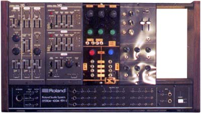

|

Late 1980 my father gave me this synth, consisting of one 110 VCO-VCF-VCA module, one 140 2 ENV-LFO, one 191J 5 module system rack, and the 181 49 keyboard controller.
Unfortunately, by the time I could afford to buy more modules, they were no longer available, and I never did find any for sale second hand.
The third black module is my earliest surviving d.i.y. module. It includes a pair of sub oscillators I designed, the circuit for which was published in ETI "Ideas for Experimenters" in the early eighties, as well as two ETI vca/ring modulators.
The fourth module is the VCF/VCA/BPF module from the SH5, rebuilt to fit into an empty space on the System 100M.
The fifth module may end up being the envelope generators from the SH5, or it may just remain as it is - a hole.
Article, art & design copyright 1999 by Ken Stone
|